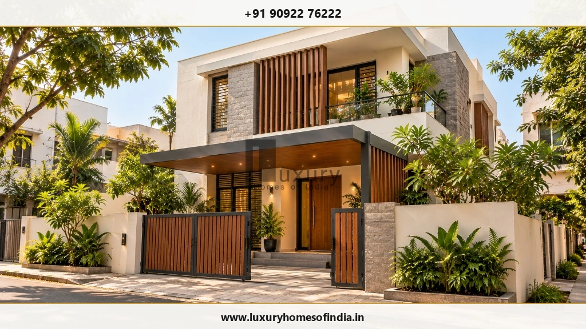
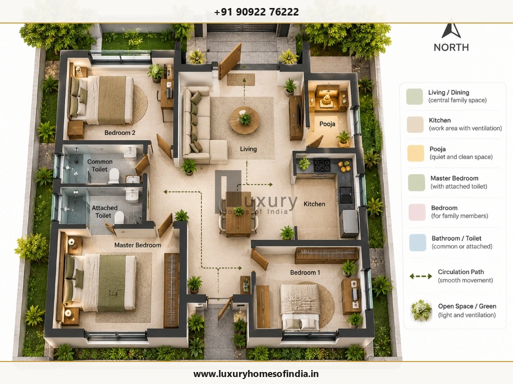
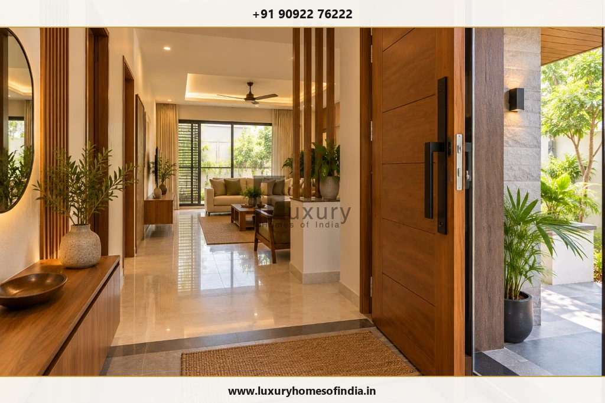
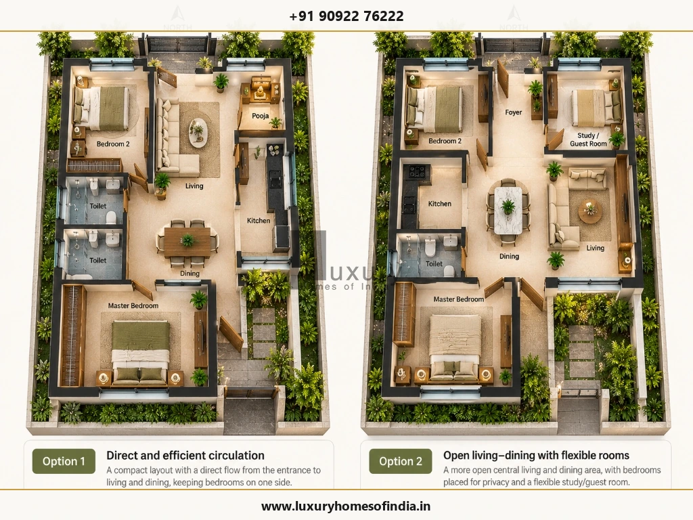
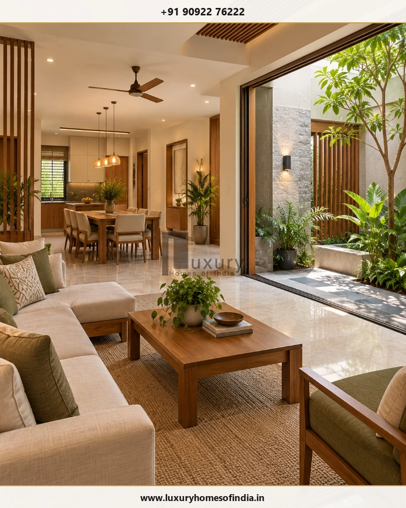

Executive Summary for Homeowners
A north-facing house plan as per Vastu combines traditional Indian planning preferences with the practical requirements of everyday living. Homeowners commonly consider the main entrance on the north side, the living room near the front, a pooja space in the north-east, a kitchen in the south-east and a master bedroom in the south-west. These are traditional preferences, not mandatory building rules or guarantees of prosperity.
The right layout depends on more than compass direction. Plot dimensions, road access, permitted building area, room sizes, daylight, ventilation, privacy, parking and service locations all influence what is feasible. For a house in Chennai or elsewhere in India, the planning process should also account for local climate, site conditions and applicable building regulations.
This guide explains common Vastu room placements, main-door considerations, planning ideas for different plot sizes and the checks to complete before construction. Use the examples as starting points for discussion with an architect, not as construction-ready drawings.

What Is a North-Facing House as per Vastu?
A north-facing house generally has its principal entrance on the north side, facing the road or approach. Confirm the orientation using reliable site-survey information and a clearly marked north arrow on the architectural drawing.
In traditional Vastu Shastra, north is associated with Kubera, a deity linked with wealth and prosperity. Many homeowners value this cultural association when choosing a plot or planning a home. These are traditional spiritual beliefs, not scientifically established guarantees of financial success, health or well-being.
A north-facing entrance alone does not determine the quality of a house. The full plan must accommodate the household's requirements, comfortable circulation, appropriate room dimensions, natural light, ventilation, structural safety and applicable regulations.
Ideal Room Placement in a North-Facing House Plan
The following table summarises commonly followed Vastu preferences alongside practical design considerations. Interpretations vary between traditions and practitioners, so discuss any essential preferences before finalising the concept plan.
| Room or feature | Common traditional preference | Practical planning priority |
|---|---|---|
| Main entrance | North North wall, often towards the north-east half | Clear access, weather protection, security and circulation |
| Living room | N / NE / E North, north-east or east | Daylight, seating, privacy and a convenient entry route |
| Pooja room | NE North-east | A peaceful location with convenient access |
| Kitchen | SE / NW South-east; north-west sometimes considered an alternative | Ventilation, safe work zones and service connections |
| Master bedroom | SW South-west | Privacy, comfortable dimensions and storage |
| Children's bedroom | W / NW West or north-west | Study space, daylight and room for daily activities |
| Guest bedroom | NW North-west or another suitable zone | Convenient access and separation from private areas |
| Toilets and bathrooms | W / NW West or north-west in many interpretations | Waterproofing, ventilation and drainage |
| Staircase | S / W / SW South, west or south-west in many interpretations | Safe dimensions, headroom, structure and circulation |
| Parking | Front / NW Site-dependent; some layouts consider front-side or north-west areas | Vehicle access, pedestrian safety and required open spaces |

1. Main Door Position for a North-Facing House
The main entrance is an important consideration in a north-facing house plan as per Vastu. Many practitioners prefer a location on the north wall, often towards its north-east half. Some detailed methods divide the wall into segments, or padas, to identify preferred entrance positions. The interpretation depends on the Vastu tradition being followed.
Before fixing the entrance, confirm the plot orientation and boundary dimensions on the site drawing.
Main-Door Planning Checklist
- Coordinate the entrance with the gate, parking and pedestrian route.
- Provide a comfortable transition from the entrance to the living area.
- Consider rain protection, threshold detailing and surface drainage.
- Plan door hardware, outdoor lighting and security provisions early.
- Preserve usable room dimensions and required open spaces.
- Check how the entrance interacts with furniture, privacy and natural light.
A north-facing entrance does not automatically make a home bright. Surrounding buildings, trees, window positions, glazing, shading and internal partitions all influence daylight.
2. Living Room Placement and Layout
The north, north-east or east portion of a home is commonly considered for the living room in Vastu-oriented layouts. The final position should also work with the entrance, available frontage and the household's preferred way of entertaining and relaxing.
On a compact plot, a combined living and dining space may use the available area efficiently. A larger home may allow a separate dining area, a family lounge or a connection to a courtyard or garden.
Consider These Points When Developing the Living-Room Plan:
- Keep the main circulation route clear.
- Plan seating and storage before fixing electrical points.
- Position windows to balance daylight, privacy and glare.
- Coordinate the television wall, air-conditioning and other services.
- Consider external views and shaded outdoor connections where feasible.
For Chennai homes, evaluate solar exposure, shading and opportunities for cross-ventilation alongside traditional room-placement preferences.
3. Pooja Room Placement as per Vastu
The north-east is commonly preferred for a pooja room in traditional Vastu layouts. Depending on the household's practices and available floor area, this can be a separate room, a compact prayer niche or an integrated prayer space.
A separate room is not essential for every home. The important design considerations are convenient access, a calm setting, suitable lighting and a layout that does not interfere with ventilation or circulation.
Before Finalising the Pooja Space:
- Confirm its size and storage requirements.
- Coordinate lighting and electrical provisions.
- Choose finishes that are easy to maintain.
- Avoid blocking a useful window or access route.
- Resolve its location before interior and service drawings are completed.
If the north-east corner is needed for the entrance or another essential function, ask the architect to explore alternatives consistent with the family's priorities.
4. Kitchen Placement in a North-Facing House
The south-east is commonly preferred for the kitchen in Vastu-based layouts. The north-west is sometimes considered an alternative when the plot or overall floor plan makes the preferred position impractical.
Kitchen planning should start with the household's cooking habits, appliance requirements and safe movement.
Kitchen Design Essentials
- Coordinate the cooking platform, sink, refrigerator and storage.
- Provide appropriate exhaust and ventilation.
- Allow practical worktop and appliance clearances.
- Coordinate electrical points, plumbing and utility access.
- Maintain a convenient relationship with the dining area.
- Consider how doors, windows and circulation affect daily use.
Some Vastu practitioners prefer a cooking arrangement in which the cook faces east. Assess this preference within the available space rather than compromising safe working clearances or ventilation.
5. Master Bedroom in the South-West
The south-west is a common traditional preference for the master bedroom. It may also work as a private part of the home, depending on the plot and the positions of the other rooms.
A well-planned bedroom should fit the bed, wardrobes, dressing requirements and comfortable walking space without creating awkward circulation.
Consider privacy from the entrance and living room, natural light, ventilation, storage and convenient bathroom access. Where a wall or window faces west, evaluate afternoon heat and suitable shading.
If the preferred location cannot accommodate a comfortable room, explore alternatives that respect the family's priorities while preserving practical dimensions and privacy.
6. Children's and Guest Bedrooms
Children's bedrooms are often considered for the west or north-west in traditional Vastu layouts. Guest bedrooms may also be planned in the north-west or another suitable area.
For a child's room, account for the bed, study desk, wardrobe, electrical safety and open floor area for daily activities. Daylight and ventilation should be considered alongside the room's orientation.
For a guest room, convenient access and privacy are important. Where possible, arrange the route to the bedroom and bathroom without requiring guests to pass through the family's most private spaces.
7. Toilets, Bathrooms and Staircases
Traditional Vastu layouts often prefer bathrooms in the west or north-west and staircases in the south, west or south-west. These preferences must be reconciled with plumbing, structural design, available space and applicable requirements.
Bathroom Planning
- Provide effective ventilation and moisture control.
- Specify appropriate waterproofing for wet areas.
- Plan floor slopes and drainage carefully.
- Coordinate plumbing stacks across floors where practical.
- Preserve convenient access and bedroom privacy.
Staircase Planning
- Confirm safe tread and riser dimensions with the designer.
- Provide suitable headroom, handrails and lighting.
- Coordinate landings, circulation and structural supports.
- Reserve the staircase location early if an upper floor is planned.
- Review its impact on room sizes and the usable ground-floor area.
Technical Design Rule:
Avoid relocating staircases, structural elements or plumbing shafts late in construction simply to match a generic diagram. Significant changes require review by the relevant design professionals.

North-Facing House Plan Ideas for Different Plot Sizes
The examples below are preliminary planning concepts, not verified layouts for a particular property. Actual feasibility depends on the buildable area, setbacks, applicable development controls, parking, services and room dimensions.
North-facing house plan for a 20 × 40 ft plot
A 20 × 40 ft plot has a gross land area of 800 sq ft. A compact home may be explored, but the number of bedrooms and floors cannot be confirmed from plot dimensions alone.
Planning priorities may include:
- An entrance and living space with clear circulation.
- A compact kitchen and dining arrangement.
- Bedrooms with practical furniture clearances.
- Efficient bathroom and storage locations.
- A coordinated staircase if future expansion is intended.
A narrow plot may require compromises between traditional room-placement preferences and comfortable room sizes.
North-facing house plan for a 30 × 40 ft plot
A 30 × 40 ft plot has a gross land area of 1,200 sq ft. Depending on the permitted footprint, a two-bedroom layout or a compact three-bedroom concept may be worth exploring.
The concept could consider the living room near the north entrance and the kitchen in a suitable south-east zone, with bedrooms arranged around privacy, light and circulation requirements. Parking, ventilation and setbacks must be checked before confirming the layout.
If a first floor is planned for a later stage, coordinate the staircase and structural provisions from the beginning.
North-facing house plan for a 30 × 50 ft plot
A 30 × 50 ft plot has a gross land area of 1,500 sq ft. It may offer additional planning flexibility for room dimensions, storage, parking or an outdoor area, subject to the site's permitted development.
Do not assume that all 1,500 sq ft can be covered by the ground-floor building. Establish the allowable footprint and open-space requirements before allocating rooms.

North-facing G+1 house plan
A G+1 home has a ground floor and one upper floor. One possible planning approach is to place shared living functions downstairs and private bedrooms upstairs.
Illustrative Ground-Floor Arrangement
- Living room near the entrance.
- Kitchen and dining in a coordinated layout.
- One bedroom and bathroom, if required.
- Staircase positioned for practical circulation and structural coordination.
Illustrative First-Floor Arrangement
- Master bedroom and additional bedroom or bedrooms.
- Family lounge or study, if space permits.
- Balcony or terrace where permitted and practical.
This is an illustrative arrangement, not a construction drawing. A qualified design professional must develop the actual layout around the site, family requirements and applicable rules.
How to Plan a North-Facing House as per Vastu
A coordinated planning process helps resolve the most important decisions before construction starts.
Step 1: Verify the plot
Confirm boundary dimensions, road frontage, site levels, access and north direction using reliable site information.
Step 2: Prepare the family brief
List the required bedrooms, bathrooms, parking spaces, kitchen arrangements, storage, pooja space and future expansion needs.
Step 3: Establish the budget and scope
Estimate the intended construction area and specifications. Account for structural work, electrical and plumbing services, waterproofing, finishes, external works, approvals and contingency allowances.
Step 4: Develop the concept plan
Discuss the entrance, living room, kitchen, bedrooms and prayer space with the architect. Identify which Vastu preferences are essential to the family and where alternatives are acceptable.
Step 5: Check applicable planning requirements
Setbacks, permitted floor area, building height and approval requirements depend on the property and the current rules that apply to it. For Chennai properties, consult the relevant authority and applicable regulations.
Official Planning Resources for Chennai:
Official starting points include the Greater Chennai Corporation Town Planning services and the Chennai Metropolitan Development Authority.
Ensure technical and planning requirements are fully cross-referenced before ground breaking.Step 6: Coordinate technical drawings
Finalise the architectural plan alongside the structural design, electrical layout, plumbing, drainage and waterproofing details before work begins. Early coordination helps identify conflicts before they become expensive site changes.

Common Mistakes to Avoid
Mistake 1
Choosing a plan only because it faces north. The entire layout must suit the site and household.
Mistake 2
Copying a generic online drawing. A plan from another plot may not fit the actual dimensions or applicable requirements.
Mistake 3
Assuming the full plot is buildable. Confirm setbacks and permitted development before fixing room sizes.
Mistake 4
Ignoring daylight and ventilation. Orientation alone cannot establish the environmental performance of a room.
Mistake 5
Finalising the staircase too late. Late changes can affect circulation, structure and room dimensions.
Mistake 6
Overlooking service coordination. Plan electrical work, plumbing, drainage and air-conditioning provisions early.
Mistake 7
Treating Vastu as a substitute for technical design. Traditional preferences do not replace structural safety or statutory requirements.
Mistake 8
Changing the layout without professional review. Significant construction-stage changes should be assessed before implementation.
Is a North-Facing House Always Best as per Vastu?
North-facing homes are traditionally preferred by many homeowners, but the direction alone cannot determine whether a house is well designed. Comfortable room dimensions, daylight, ventilation, privacy, access, drainage, safety and compliance with applicable regulations are also essential.
Homes facing other directions can also be designed around their occupants' needs. The objective is to respect cultural preferences while developing a functional, technically coordinated and site-appropriate home.
Frequently Asked Questions
Plan Your Home with Luxury Homes of India
A north-facing house plan should reflect how your family lives, not just the direction of the main entrance. Early planning, coordinated technical drawings and a clear understanding of the site can help incorporate traditional Vastu preferences into a comfortable contemporary home.
Planning a new home in Chennai? Prepare your plot dimensions, road-facing direction, preferred number of bedrooms, parking requirements and approximate construction budget before discussing your initial planning needs with Luxury Homes of India.
Planning a New Home in Chennai?
Contact Luxury Homes of India to discuss your residential planning, Vastu considerations, and technical blueprints with our senior architectural team.
Schedule a Floor Plan Consultation